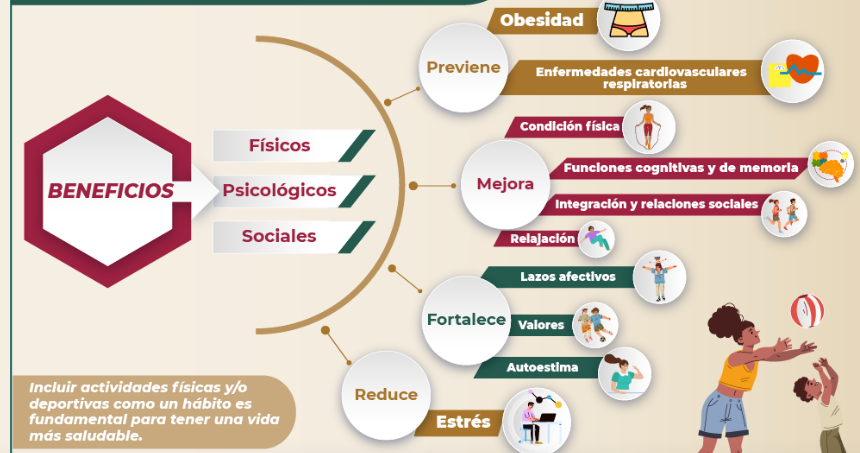

¿Que es?
La activación física, también conocida como actividad física, se refiere a cualquier movimiento corporal producido por los músculos esqueléticos que resulta en un gasto energético. Esto abarca una amplia gama de actividades que pueden variar en intensidad y duración, desde actividades cotidianas hasta ejercicios estructurados.
La actividad física puede clasificarse en varias categorías según su propósito y características.
Actividad Física de la Vida Diaria:
✦ Transporte Activo: Caminar o andar en bicicleta para ir a trabajar, a la escuela, o hacer recados.
✦ Tareas Domésticas: Limpiar la casa, jardinería, lavar el coche.
✦ Trabajo: Actividades físicas en el entorno laboral, como cargar objetos o estar de pie.
Ejercicio:
✦ Actividad física planificada, estructurada y repetitiva con el objetivo de mejorar o mantener la aptitud física. Ejemplos incluyen correr, nadar, levantar pesas, yoga, y clases de aeróbicos.
Deportes y Juegos:
✦ Participación en deportes organizados (fútbol, baloncesto, tenis) y juegos recreativos (juegos de parque, natación recreativa).
Actividades Recreativas:
✦ Actividades físicas realizadas en el tiempo libre por placer, como senderismo, baile, o ciclismo recreativo.
